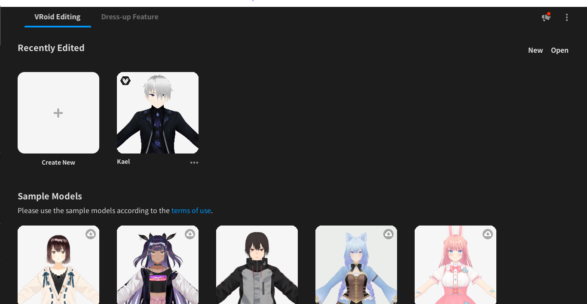
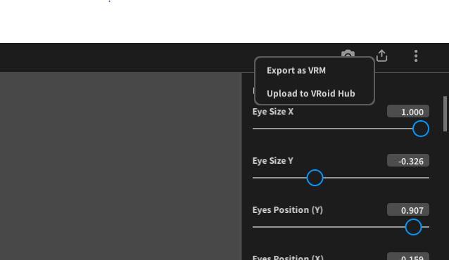

Best tricks for make Anime character for UE4 and UE5 game.
Today we discuss how can we make anime characters and use it in UE4 and UE5 project. First we need to know how can make anime character, For creating anime character first we need to download VRoid Studio. VRoid Studio is a free 3D character creation software that allows users to create anime-style characters easily. You can download it from the official website: https://vroid.com/en/studio,
After downloading and installing VRoid Studio, follow these steps to create your anime character:
1. Open the VRoid Studio application.
2. Click on the "Create Character" button.

3. In the character creation window, click on the "Create" button.
4. Once the character is created, you can export it in the VRM format.
5. To export the character, go to the "Export as VRM".

6. Save the file to your desired location.
7.Now install the VRM4U plugin in your UE5 project. You can download it from the official GitHub repository: https://github.com/ruyo/VRM4U/releases
8. Now, you can import the exported character into your UE5 project.
9.Drag and drop the VRM file into the Content Browser of your UE5 project.
That's it! You have successfully created an anime character using VRoid Studio and imported it into your UE5 project. You can now use the character in your game or animation.